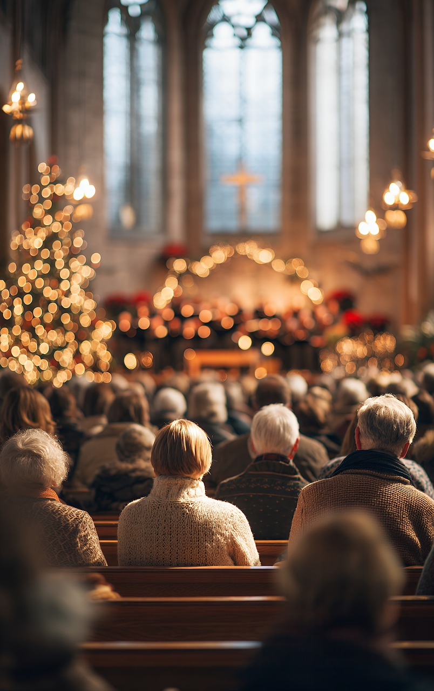
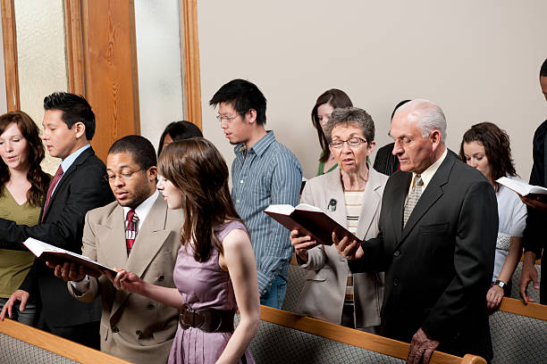
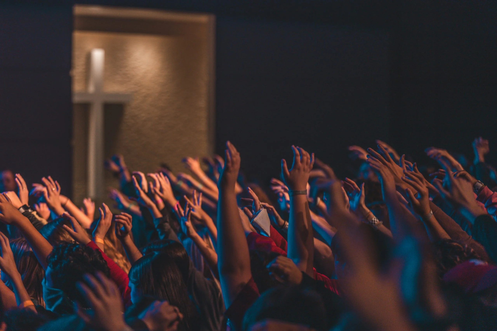
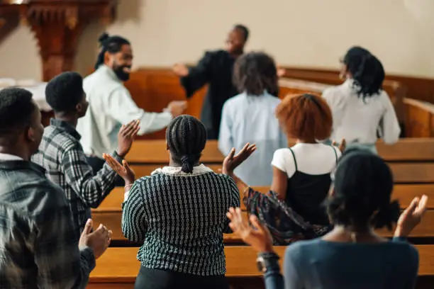

Conference
May 16, 2026
Church Conference
A church-wide gathering focused on prayer, revival, unity, and spiritual growth for the entire congregation.
Welcome
Events
Upcoming
A church-wide gathering focused on prayer, revival, unity, and spiritual growth for the entire congregation.

A three-night season of prayer, worship, and teaching designed to awaken fresh spiritual passion and renewed faith.

An inspiring gathering for young people to grow in faith, leadership, and purpose through worship and practical teaching.

A worship-filled and teaching-rich event empowering women to grow in faith, purpose, and spiritual confidence.

A focused session on spiritual leadership, integrity, and responsible living for men in the church and community.
A joyful celebration of salvation and public commitment, where new believers are baptized in faith and obedience.

A sacred service of remembrance and thanksgiving, honoring the body and blood of Jesus Christ.

A purposeful community outreach focused on evangelism, practical care, and sharing hope with the surrounding neighborhood.

A community fundraiser supporting church projects, ministry needs, and outreach initiatives for the coming year.

A celebratory Christmas worship service filled with praise, scripture, and the joyful message of Christ’s birth.
A triumphant Easter celebration of Christ’s resurrection, hope, and the power of the gospel.

A special service honoring the church’s journey of faith, service, and impact in the community.